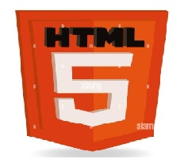
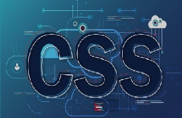
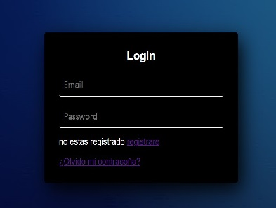
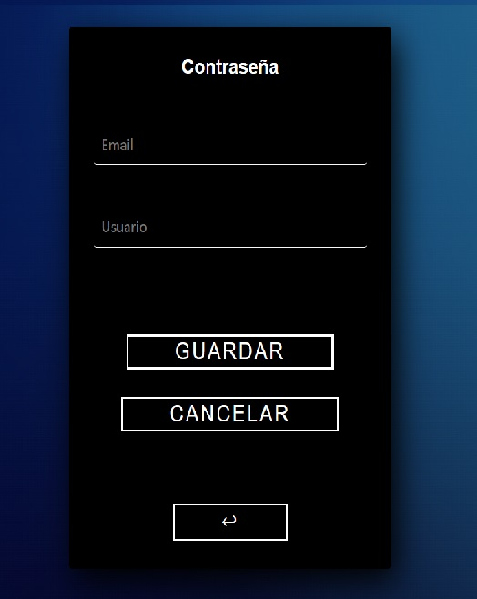
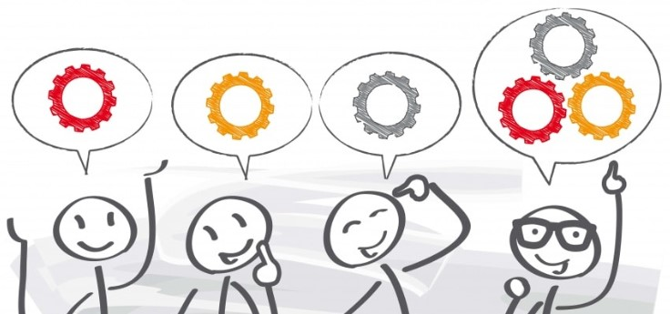

HTML:
El HTML es un estandar, HTML 5 es la quinta revisión importante del lenguaje básico de la World Wide Web, HTML. HTML5 específica dos variantes de sintaxis para HTML: una «clásica», HTML, conocida como HTML5, y una variante XHTML conocida como sintaxis XHTML 5 que deberá servirse con sintaxis XML.
En HTML existe un esqueleto básico, que todos debemos de conocer porque se viene usando desde los inicios del lenguaje. Nos referimos a la conocida estructura del HEAD / BODY. Toda jerarquía de etiquetas comienza por HTML y dentro tenemos dos grandes bloques HEAD y BODY .
HTML5 es capaz de ofrecer vídeo y audio online sin necesidad de instalar ningún plugin. Además tiene nuevas opciones de renderizado de gráficos o anotaciones para cualquier navegador. Esto quiere decir que HTML5 es capaz de funcionar en todos los navegadores.

02/02/2023
GitHub:
En estas calase bvimos como hacer la cuanta de GitHub y como hacer un repositorio, para ir agragando nuestrso codigos y ir viendo las diferencias de nuetro codigo haciendo verciones de el mismo codigo haciendo la demas verciones que nos ayudaran a aorendeer a mejor la pagina web y sus mejoras. Y como hacer ramas del mismo codigo sin dañar al codigo solo para ver como se veria mejor o si cambaiamos a esa forma y color tamaño de letra y mas cosas, tambien bimois como unirnos a una sociedad.
08/02/2023
Css:
Este dia solo esperimentaremos con el lenguaje HTML, tambien bimos CSS es un archivo diferente o aparte del html , el css se espesifica en el diseño, la 3 caja es la innteractividada , el css son capas de diseño, el Material desaing es para que se vea binita la pagina se vea bonita, el cual va de la mano con css.

09/02/2023
Css:
El dia de hoy vimos el css es el codigo que se utiluza para dar estilo a una pagina web. Al igual que HTML, css no es un lenguaje de programacion, es un lenguaje de hojas de estilo.
Por lo tanto, CSS es un mecanismo complementario del lenguaje HTML que permite indicarle al navegador el estilo que debe darle a los distintos elementos al desplegar la información de un sitio web.

16/02/2023
Diseño pagina web:
El dia de hoy en la clase el maestro nos hablo de como eran antes los disenos de sitios web y como estan ahora nos dejo investigar como se ven los disenos antes y ahora, esto para cambiar el diseño de nuestro html.
20/02/2023
Inicio de cecion:
El dia de hoy en la clase el profe nos mostro lo necesario para el formulario del login y del registro del sistema y nos pidio hacer en clase un html de login muy basico.

22/02/2023
Pagina para cuando se olvida el password:
El dia de hoy en la clase el profe digo que le imlementaramso el olvidarse de la contraseña y seguir mejorando.

23/02/2023
Analisis de proyecto web:
Hoy vimos como hacer mas efectivo y que se mejor el sistema web vimos que tipo de sistema seria que seria de ventas y tipo tubimos lluvia de ideas etc.
